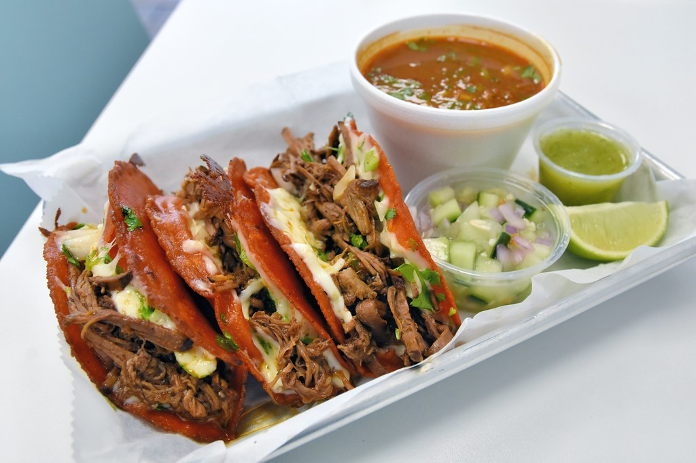

Home
Quesa-Birria Tacos

Description:
Quesa-Birria tacos are made from the heart for the people you truly care about. They take patience, preparation, and love to prepare. The reward is ultimately the smile on the faces of your friends and family when they take that first bite.
There are many ways to make them. Traditionally Birria (the meat stew that you make the tacos from) was made with lamb in Jalisco, Mexico. Since its inception as a popular street food it is now being made out of beef as well.
Ingredients:
- 6lb Chuck Roast (cut into 2-3 inch cubes)
- 8 Quajillo Chilis (rehydrated - See below)
- 1 to 2 cups of rehydrated chili water (see below)
- 3-4 tbsp of neutral oil (veggie oil works)
- 2 tsp of chicken bullion (I used Better than Bullion)
- 1.5 White Onions
- 6 cloves of garlic
- 4 bay leaves
- Salt and Pepper (coarse grind)
- 1 tbsp of mexican oregano
- 1 cinnamon stick
- 4 cloves
For the Tacos:
- Oaxaca Cheese
- Corn Tortillas
- Cilantro
- 0.5 White onion
Steps for the Birria:
- De-seed the dried chillies and toast them in a skillet until they become fragrant, then place them in a small saucepan and cover them with water. Boil them for 15 minutes in a low-boil.
- Take the rehydrated chillies and add them to a blender, add 1 cup of water to the blender and blend it. It should look like the consistency of tomato sauce that is somewhat watery. Add more water if needed.
- Place some neutral oil in a deep set pan or dutch oven and heat to high. Cut your chuck roast into cubes and season heavily with salt and pepper on every side.
- Sear each piece of roast 2 or 3 at a time in the pan until golden on all sides, placing them in a crock pot after you are done.
- Place the remaining ingredients into the crock put and cover with blended chilli mixture.
- Cook on low for 7 to 8 hours.
- Pull out and shred the meat and strain out the rest of the contents of the crock pot reserving the liquid.
Steps for the Tacos:
- Heat up a griddle or flat-top grill.
- Dip corn tortilla in reserve crock put liquid (consume).
- Place tortilla on the griddle/grill and add meat/cheese to tortilla and fold it in half to make a quesadilla./li>
- Garnish with cilantro and onions, dip in bowl of consume and ENJOY!